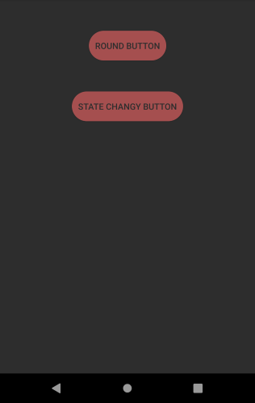
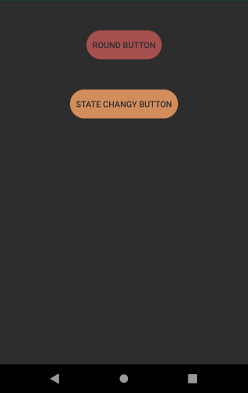
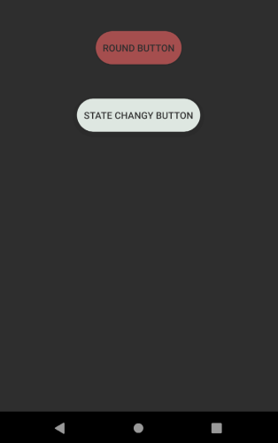

Android: State changing button
30th May 2021
In the previous post I worked out how to make a button roundy in Android. While trying to fix something else in work I came across this answer to a question on Stack Overflow and thought it was a pretty good follow-up post. Sometimes these things just fall into your lap
This shows you how you can change the appearance of your drawable depending on it's state. I'm going to continue to use a button though it isn't the ideal way to show off focus, a text input or something would be better but I can't be bothered. An important point made under the answer by user mikerowehl:
the order of the items in the selector is significant. If you put the <item> with no state filters first in the file it overrides the rest.
The code
Normal button
Focus button
Clicked button
<?xml version="1.0" encoding="utf-8"?>
<selector
xmlns:android="http://schemas.android.com/apk/res/android">
<item android:state_pressed="true" >
<shape>
<solid android:color="@color/blog_background" />
<corners android:radius="50dp" />
</shape>
</item>
<item android:state_focused="true" >
<shape>
<solid android:color="@color/blog_orange_highlight" />
<corners android:radius="50dp" />
</shape>
</item>
<item>
<shape>
<solid android:color="@color/blood_orange" />
<corners android:radius="50dp" />
</shape>
</item>
</selector>


